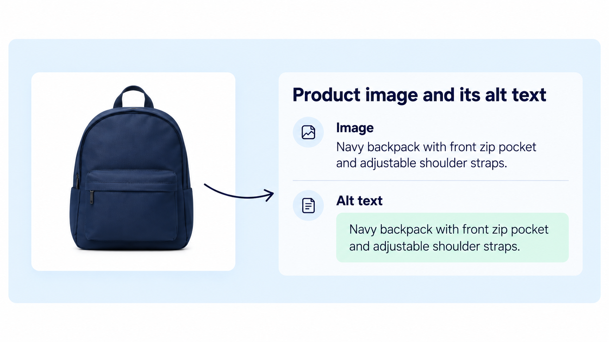
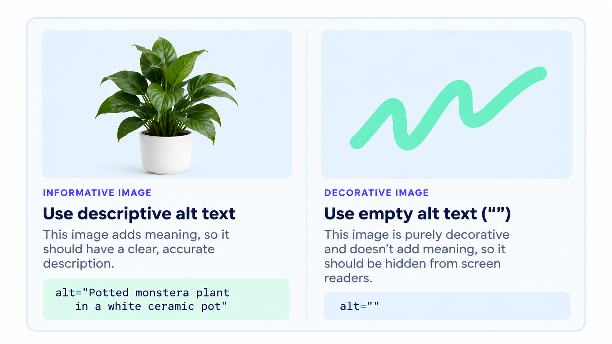

A filename, alt text, and visible product copy can all describe the same product. They still have three different jobs.
When those jobs get blurred together, stores end up with filenames pretending to be sentences, alt text pretending to be SEO copy, and product descriptions repeating what the image already shows.
1. The same product can need three different descriptions

2. What should an image filename do?
A filename should identify the asset clearly enough that a person or system can recognize it later. Generic camera names such as IMG_4821.jpg tell you almost nothing.
A structured filename can use product and image context without becoming a paragraph.
riley-tee-green-front-on-model.jpg
Readable. Distinct. Useful for asset organization. Not pretending to be prose.
3. What should alt text do?
Alt text should explain the visual information someone needs from the image. It is written for the image in context, not for the media library.
That means two files with similar names may need different alt text if one is a back view and the other shows a close-up of embroidery.
“Green oversized graphic tee on model, front view”

4. What should visible product copy do?
Visible copy can go beyond what is literally visible. It can explain the fabric, fit, inspiration, care, use case, or other product information a shopper needs.
That is why copying your alt text into the product description wastes the description’s job. The description has much more room to answer buying questions.
5. One product image, three different fields
6. A repeatable image-metadata workflow
Penstack uses the product title plus image context such as color, view, and shot type to build a consistent image title. Alt text is generated separately because accessibility text should describe the image, not merely reproduce the filename.
The takeaway
Related fields should agree with each other without becoming duplicates.

Put image details into the same product workflow.
penstack keeps image titles, alt text, product content, review, and publishing connected.